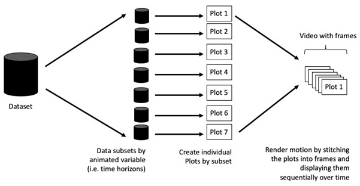

package 'ggiraph' successfully unpacked and MD5 sums checked
The downloaded binary packages are in
C:\Users\carol\AppData\Local\Temp\RtmpCszXu7\downloaded_packages
package 'plotly' successfully unpacked and MD5 sums checked
The downloaded binary packages are in
C:\Users\carol\AppData\Local\Temp\RtmpCszXu7\downloaded_packages
package 'DT' successfully unpacked and MD5 sums checked
The downloaded binary packages are in
C:\Users\carol\AppData\Local\Temp\RtmpCszXu7\downloaded_packages
2.2 Importing data
exam_data <-read_csv("data/Exam_data.csv")
3. Interactive Data Visualisation - ggiraph methods
ggiraph is a tool that allows you to create dynamic ggplot graphs. This allows you to add tooltips, hover effects and JavaScript actions to the graphics. The package also allows the selection of graphical elements when used in shiny applications.
Error in girafe(ggobj = p, width_svg = 6, height_svg = 6 * 0.618): could not find function "girafe"
When hovering the mouse pointer on an data point of interest, the student’s ID will be displayed.
3.1.1 Displaying multiple information on tooltip
The first three lines of codes in the code chunk create a new field called tooltip. At the same time, it populates text in ID and CLASS fields into the newly created field. Next, this newly created field is used as tooltip field as shown in the code of line 7.
Error in girafe(ggobj = p, width_svg = 6, height_svg = 6 * 0.618): could not find function "girafe"
3.1.7 Coordinated Multiple Views with ggiraph
In order to build a coordinated multiple views as shown in the example above, the following programming strategy will be used:
Appropriate interactive functions of ggiraph will be used to create the multiple views. patchwork function of patchwork package will be used inside girafe function to create the interactive coordinated multiple views.
Error in girafe(code = print(p1 + p2), width_svg = 6, height_svg = 3, : could not find function "girafe"
4. Interactive Data Visualisation - plotly methods
Plotly’s R graphing library create interactive web graphics from ggplot2 graphs and/or a custom interface to the (MIT-licensed) JavaScript library plotly.js inspired by the grammar of graphics. Different from other plotly platform, plot.R is free and open source.
There are two ways to create interactive graph by using plotly, they are:
by using plot_ly(), and by using ggplotly()
4.1 Creating an interactive scatter plot: plot_ly() method
Show the code
plot_ly(data = exam_data, x =~MATHS, y =~ENGLISH)
Error in plot_ly(data = exam_data, x = ~MATHS, y = ~ENGLISH): could not find function "plot_ly"
4.2 Working with visual variable: plot_ly() method
In the code chunk below, color argument is mapped to a qualitative visual variable (i.e. CLASS).
Show the code
plot_ly(data = exam_data, x =~ENGLISH, y =~MATHS, color =~CLASS)
Error in plot_ly(data = exam_data, x = ~ENGLISH, y = ~MATHS, color = ~CLASS): could not find function "plot_ly"
4.3 Creating an interactive scatter plot: ggplotly() method
The code chunk below plots an interactive scatter plot by using ggplotly().
Show the code
p <-ggplot(data=exam_data, aes(x = MATHS,y = ENGLISH)) +geom_point(size=1) +coord_cartesian(xlim=c(0,100),ylim=c(0,100))ggplotly(p)
Error in ggplotly(p): could not find function "ggplotly"
4.4 Coordinated Multiple Views with plotly
The creation of a coordinated linked plot by using plotly involves three steps:
highlight_key() of plotly package is used as shared data. two scatterplots will be created by using ggplot2 functions. lastly, subplot() of plotly package is used to place them next to each other side-by-side.
Show the code
d <-highlight_key(exam_data)
Error in highlight_key(exam_data): could not find function "highlight_key"
Error in eval(expr, envir, enclos): object 'd' not found
Show the code
subplot(ggplotly(p1),ggplotly(p2))
Error in subplot(ggplotly(p1), ggplotly(p2)): could not find function "subplot"
5.Interactive Data Visualisation - crosstalk methods
Crosstalk is an add-on to the htmlwidgets package. It extends htmlwidgets with a set of classes, functions, and conventions for implementing cross-widget interactions (currently, linked brushing and filtering). ## 5.1 Interactive Data Table: DT package A wrapper of the JavaScript Library DataTables
Data objects in R can be rendered as HTML tables using the JavaScript library ‘DataTables’ (typically via R Markdown or Shiny).
Show the code
DT::datatable(exam_data, class="compact")
Error in loadNamespace(i, c(lib.loc, .libPaths()), versionCheck = vI[[i]]): namespace 'htmltools' 0.5.6 is already loaded, but >= 0.5.7 is required
5.2 Linked brushing: crosstalk method
highlight() is a function of plotly package. It sets a variety of options for brushing (i.e., highlighting) multiple plots. bscols() is a helper function of crosstalk package. It makes it easy to put HTML elements side by side. It can be called directly from the console but is especially designed to work in an R Markdown document.
Show the code
d <-highlight_key(exam_data)
Error in highlight_key(exam_data): could not find function "highlight_key"
Show the code
p <-ggplot(d, aes(ENGLISH, MATHS)) +geom_point(size=1) +coord_cartesian(xlim=c(0,100),ylim=c(0,100))
Error in eval(expr, envir, enclos): object 'd' not found
Show the code
gg <-highlight(ggplotly(p), "plotly_selected")
Error in highlight(ggplotly(p), "plotly_selected"): could not find function "highlight"
Error in eval(expr, envir, enclos): object 'gg' not found
#Part 2: Programming Animated Statistical Graphics with R # 1. Overview When creating animations, the plot does not actually move. Instead, many individual plots are built and then stitched together as movie frames, just like an old-school flip book or cartoon.
 There are some terminologies: Frame: In an animated line graph, each frame represents a different point in time or a different category. When the frame changes, the data points on the graph are updated to reflect the new data.
Animation Attributes: The animation attributes are the settings that control how the animation behaves. For example, you can specify the duration of each frame, the easing function used to transition between frames, and whether to start the animation from the current frame or from the beginning.
package 'plotly' successfully unpacked and MD5 sums checked
The downloaded binary packages are in
C:\Users\carol\AppData\Local\Temp\RtmpCszXu7\downloaded_packages
2.2 Importing data
In this hands-on exercise, the Data worksheet from GlobalPopulation Excel workbook will be used.
Write a code chunk to import Data worksheet from GlobalPopulation Excel workbook by using appropriate R package from tidyverse family.
col <-c("Country", "Continent")globalPop <-read_xls("data/GlobalPopulation.xls",sheet="Data") %>%mutate(across(col, as.factor)) %>%mutate(Year =as.integer(Year))
3. Animated Data Visualisation: gganimate methods
gganimate extends the grammar of graphics as implemented by ggplot2 to include the description of animation. It does this by providing a range of new grammar classes that can be added to the plot object in order to customise how it should change with time.
transition_*() defines how the data should be spread out and how it relates to itself across time. view_*() defines how the positional scales should change along the animation. shadow_*() defines how data from other points in time should be presented in the given point in time. enter_*()/exit_*() defines how new data should appear and how old data should disappear during the course of the animation. ease_aes() defines how different aesthetics should be eased during transitions.
col <-c("Country", "Continent")globalPop <-read_xls("data/GlobalPopulation.xls",sheet="Data") %>%mutate(across(col, as.factor)) %>%mutate(Year =as.integer(Year))
3.1 Building a static population bubble plot
In the code chunk below, the basic ggplot2 functions are used to create a static bubble plot.
transition_time() of gganimate is used to create transition through distinct states in time (i.e. Year). ease_aes() is used to control easing of aesthetics. The default is linear. Other methods are: quadratic, cubic, quartic, quintic, sine, circular, exponential, elastic, back, and bounce.
In Plotly R package, both ggplotly() and plot_ly() support key frame animations through the frame argument/aesthetic. They also support an ids argument/aesthetic to ensure smooth transitions between objects with the same id (which helps facilitate object constancy).
4.1 Building an animated bubble plot: ggplotly() method